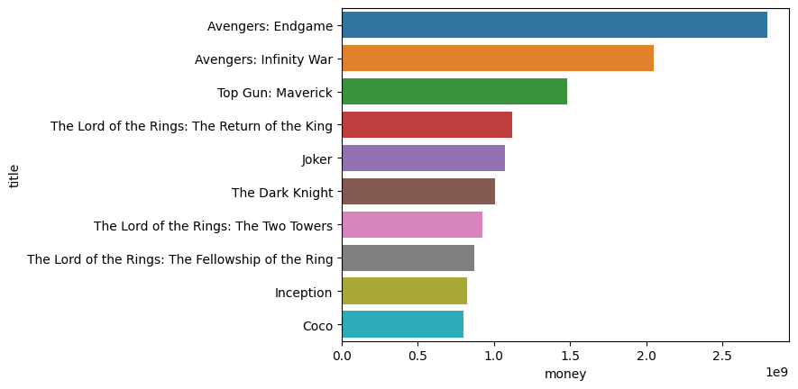

Unless you have been living under a rock, we have all heard of the streaming service, Netflix. Although they have been dominating the market for years now, the super-giant streaming service has been declining in subscribers
lately. What would be the best way to bring the subscribers back?
A movie!
Okay, it might be a little more than a lack of movies. Although, a new block-buster could help them out in the short run! Therioredicaly,
if Netflix were to only put all of their bets on a single movie to bring subscribers back, it has to be a good one...
But where to begin? For starters, we need to make sure that there is someone who is qualified and good
at their job for the creation of it.
Lets narrow our search for Netflixes new movie down into a few questions:
What directors are responsable for the highest revenue of the latest movies? Who are the ten directors
with the highest average revenue across all of their movies? And lastly, what is the best movie genre? To find this, I went over to The Movie Database (TMDB) to start retreving data via their API. Before we go to the directors,
we must find what the top movies are!
This will help get not only the top grossing movies, but also help us get an idea for what genre would be the best.

Now that we can see the top movies, we have somewhat of an idea of what is popular! Now, its time to figure out who directed these movies. I will also average out the ammount of money they have
made accross all of their movies to crunch the numbers.
Perfect! Now we can see who is in charge of what! Plus, we
can also see the average ammount of money each director has made from their movies!
With the new knowledge, we are coming closer to finding the director needed for the job... but just to be sure, let's see if the genre
itself is worth investing in.
Adventure movies take the cake! It even blows the other top contenders like Action and Family right out
of the water!
With the information we acquired, We should be able to determine what Netflix should do. For starters, the safest bet for the new movie's genre would be Adventure and perhaps some other genres mixed in
to make it stand out. For example, one of the reasons Avengers Endgame was so successful was because of it being a mixture of both adventure, action and science fiction.
Okay, so we have decided that Netflix is
to make an adventure / action movie... but who would be the best fit to direct it? It looks like by a long-shot, Joe Russo would be ideal for this sort of thing. With a good amount of success and knowledge with the genre, he would
be a good choice.
So there we have it! Netflix's best choice of action would be to make an Adventure / Action movie directed by Joe Russo.